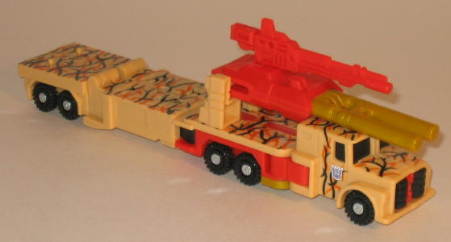 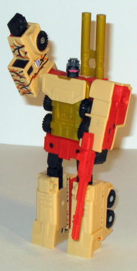
Size : Deluxe
Difficulty of Transformation : Easy
Individual Rating : 6.5
Giftset Contains
: Mega-Octane, Ro-Tor,
Movor, Rollbar, Armorhide, and extra Ruination parts and guns
Allegiances
: Decepticon
Price:
$25 (U.S.)
Color Scheme
: Sandy tan, black,
dark gray, light orange, red-orange, and some red, light gray, mustard
yellow, light red, dark army green, white, metallic light purple,
and silver
Overall Rating
: 5.5
 Mega-Octane
Mega-Octane
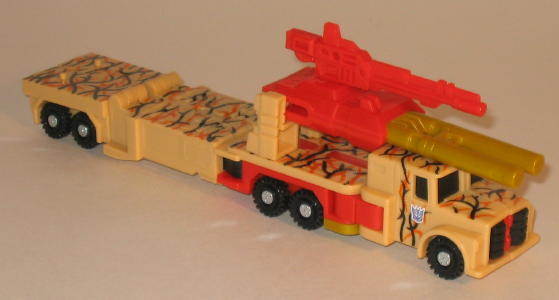
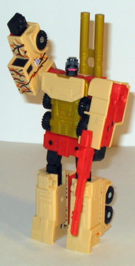
Size
: Deluxe
Difficulty of Transformation
: Easy
Individual Rating
: 6.5
(For a full review of the Mega-Octane mold,
check out the original toy review
here
.)
 Ro-Tor
Ro-Tor
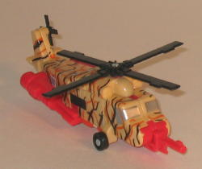
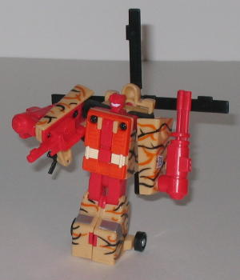
Size
: Basic
Difficulty of Transformation
: Easy
Individual Rating
: 5.4
(For a full review of the Ro-Tor mold, check
out the original toy review
here
.)
 Movor
Movor
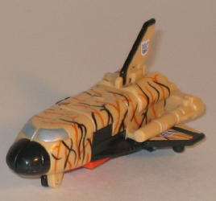
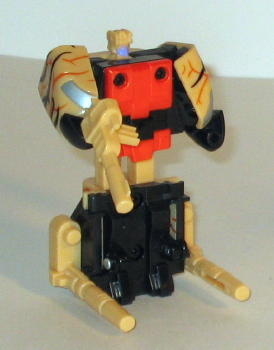
Size
: Basic
Difficulty of Transformation
: Very
Easy
Individual Rating
: 4.6
(For a full review of the Movor mold, check
out the original toy review
here
.)
 Rollbar
Rollbar
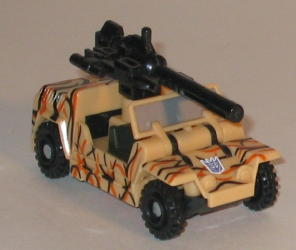
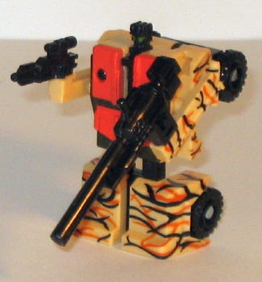
Size
: Basic
Difficulty of Transformation
: Very
Easy
Individual Rating
: 5.0
(For a full review of the Rollbar mold,
check out the original toy review
here
.)
 Armorhide
Armorhide
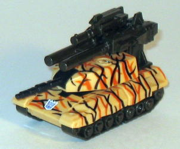
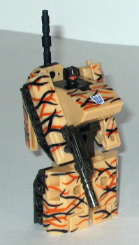
Size
: Basic
Difficulty of Transformation
: Very
Easy
Individual Rating
: 5.3
(For a full review of the Armorhide mold,
check out the original toy review
here
.)
 Ruination
Ruination
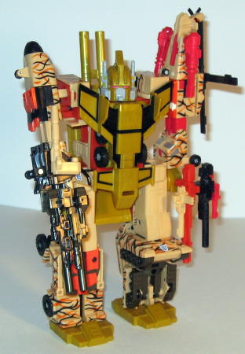
Size
: Gestalt (combination of four
Basics and a Deluxe)
Difficulty of Transformation
: Hard
Individual Rating
: 6.0
(For a full review of the Ruination combined
mode, check out the original toy review
here
.)
This third version of
Ruination in as many years has many fan-given names. Desert Camo Ruination.
Tiger Camo Ruination. Human Flesh Camo Ruination. Me, I think the deco
of the odd orange-and-black lines on all of Ruination's components this
time around looks like they'd blend in perfectly in a thicket in the middle
of a drought. But I suppose Thicket-in-the-Middle-of-a-Drought Camo Ruination
is a bit too long. Sadly, like many of his Universe Exclusive brethren,
Ruination is only a partial repaint. The main vehicle parts- i.e., the
parts you can see in the package on a store shelf- are completely different,
to be sure. They're now mostly tan, with some rather odd orange-and-black
"vein"-like lines criss-crossing all over them. It... doesn't look like
it'd blend in in any practical situation, which is why the color choice
is so odd. Especially when you consider Movor- I hope we NEVER see a space
shuttle like that in real life, because if we do, then it means that the
Apocalypse is near. It just doesn't make any real sense. What makes it
even worse, though, is that the interior robot parts, like the black and
red-orange plastic parts, are completely unchanged from the original RiD
Ruination version. And you can especially tell that no thought went into
their robot modes at all, since some of their original colors (like, say,
Rollbar's dark green and red-orange) clash with their new desert camo schemes
quite a bit. In most cases, it looks pretty ugly, actually. But still,
I think that when looked at in just their vehicle modes-- and ignoring
the implication that their schemes serve as any kind of camo-- they look
fairly nice, with the exception of out-of-left-field Movor. The Ruination
components, such as the feet, arm, and head pieces, as well as Mega-Octane's
chest, are the mustard yellow of the Japanese version of RiD Ruination,
and it actually works fairly well with the tan in the big gestalt mode.
So that particular choice I don't mind, although it's one of the few positives
about the change the Ruination set has undergone this time.
No mold changes have
been made to Universe Ruination.
Universe Ruination is another typical show of laziness for the Universe exclusives. Robot parts are unchanged, and the vehicle mode colors, although fairly nice, have an incredibly odd camo pattern on them. Not to mention that this mold is seriously showing its age-- it needs to be put to rest already. If you're only going to buy one version of Ruination, make it the Urban Camo version. If you're only going to buy two versions, make the second one the original RiD Version. Sure, they're $5 more, but their color schemes are better enough to be worth the extra moola. Universe Ruination is definitely a last resort if you want this mold.
No Stats
Review by Beastbot